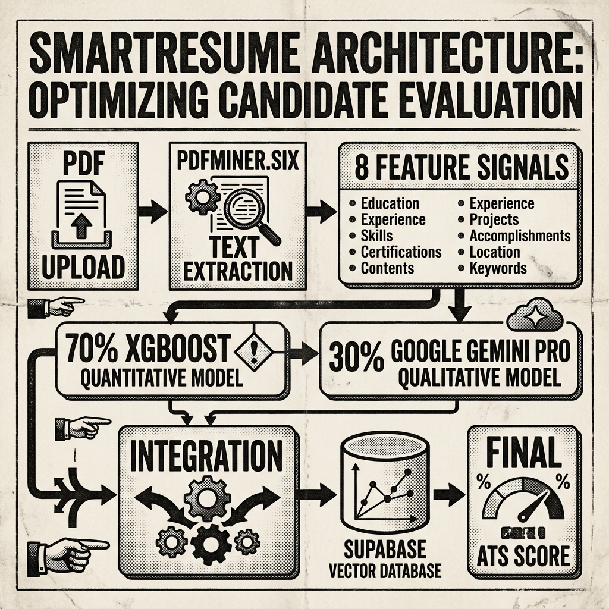

★ FLAGSHIP REPORT
FILED UNDER: MACHINE LEARNING · HYBRID GENAI ARCHITECTURE
SmartResume: AI-Powered Hybrid ATS Resume Analyzer
A hybrid AI scoring engine combining a 70% quantitative XGBoost classifier (trained on 50k+ resumes) with a 30% qualitative Google Gemini Pro evaluation.

SmartResume extracts 8 high-dimensional feature signals (Keyword Overlap, Semantic Similarity, Experience Gap, Formatting) via PDFMiner.six. The backend (FastAPI, Python, SQLAlchemy) stores vector embeddings in Supabase (PostgreSQL), combining a 0–70 quantitative XGBoost score with a 0–30 qualitative Gemini Pro recruiter analysis. Features an adaptive learning engine that learns new trending skills dynamically from high-scoring resumes over time.
⚡ Hybrid ATS Feature Attribution Engine (70% XGBoost / 30% Gemini)
Hybrid AI Demo
Extracted Signals (PDFMiner):
Weighted Hybrid Match Score:
95.3%